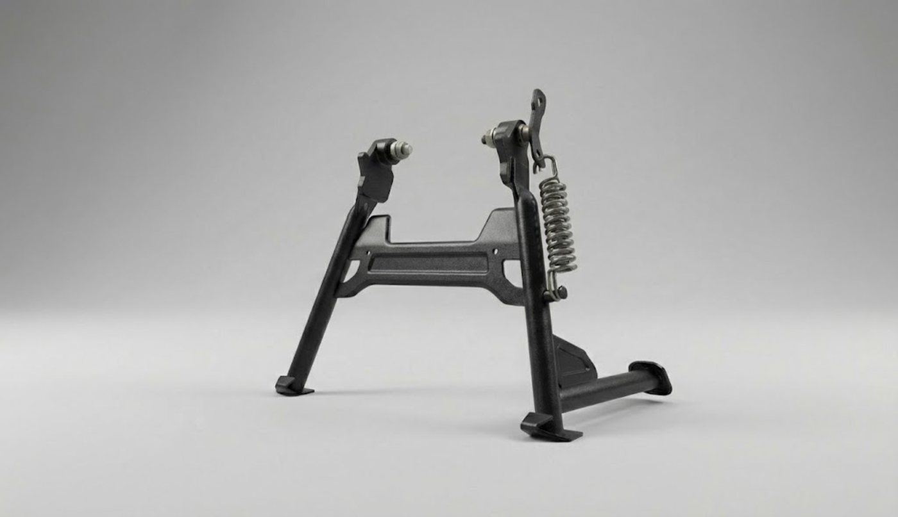
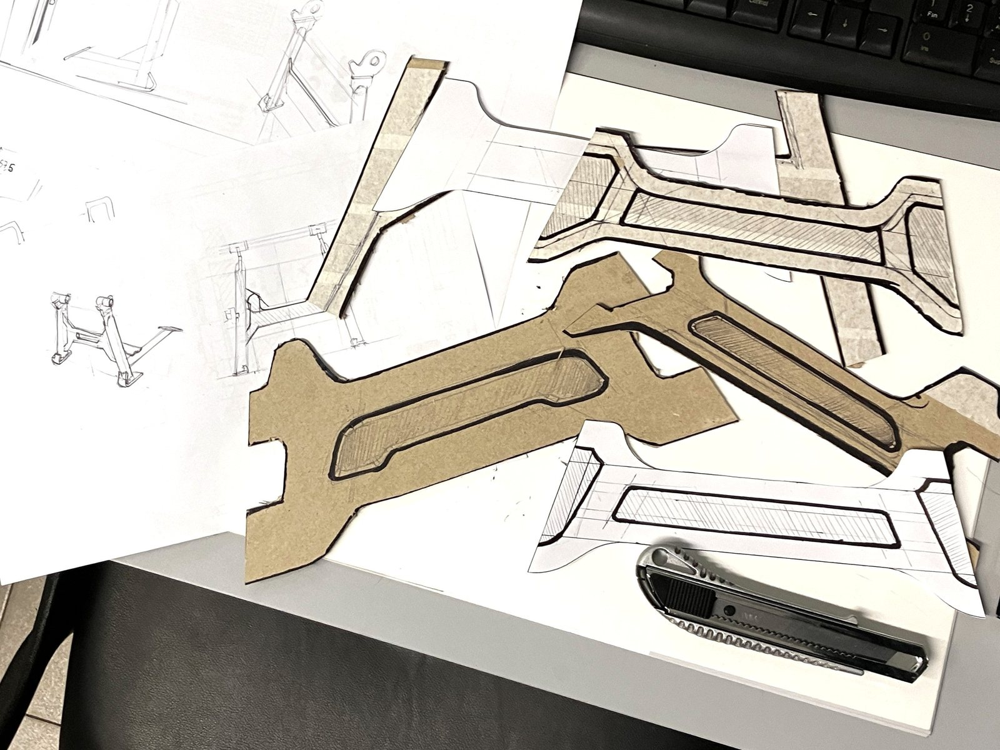
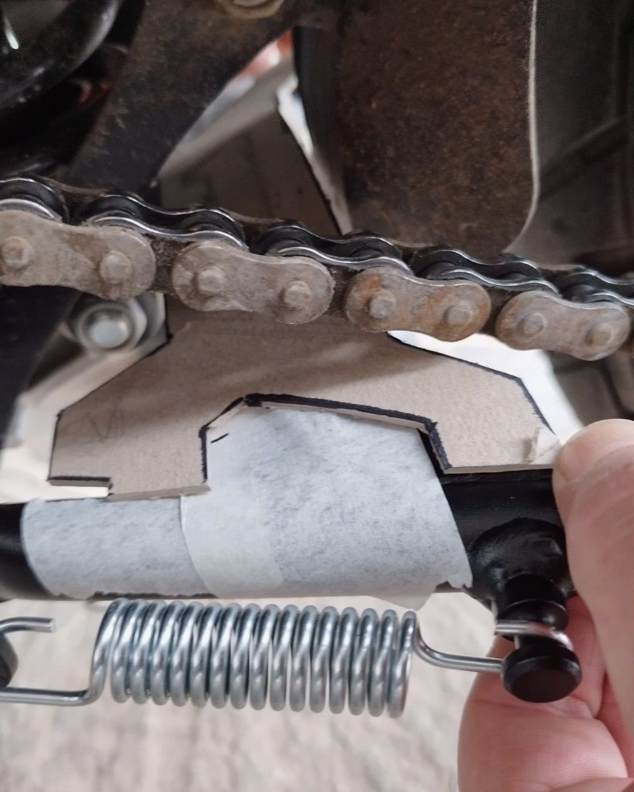
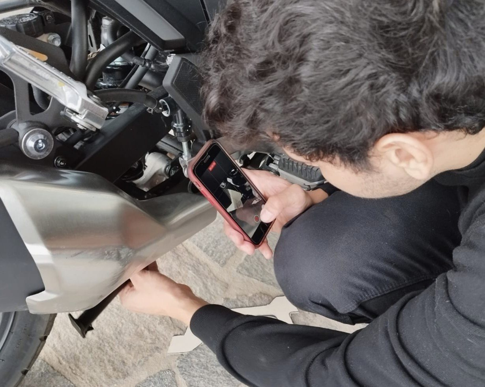
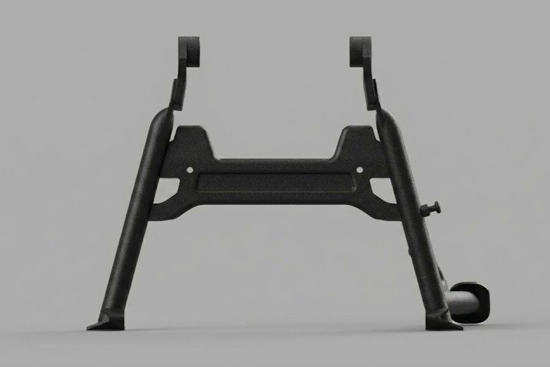
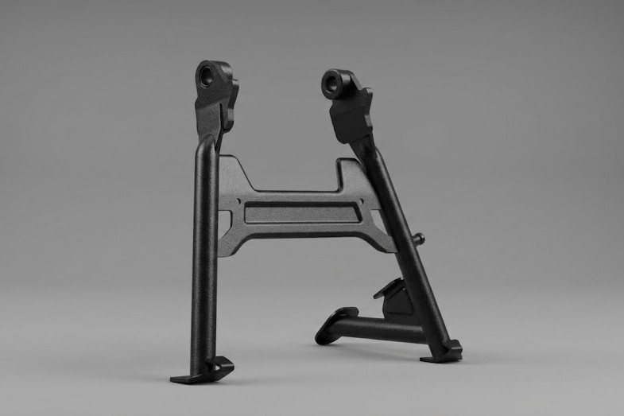
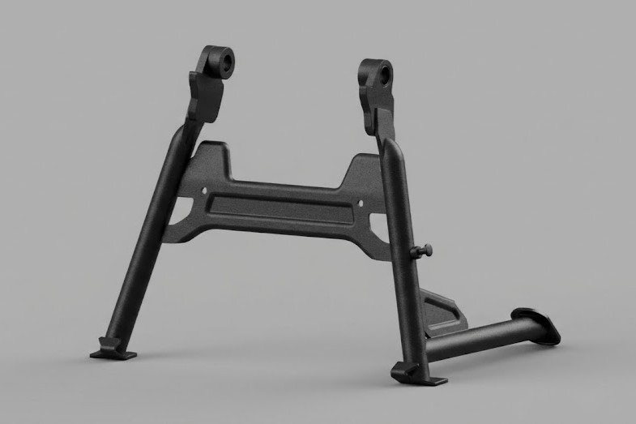
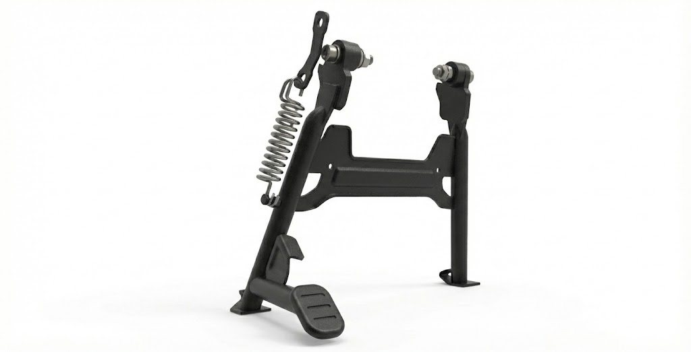

Proyecto 06 · Kawasaki · Rediseño de accesorioProject 06 · Kawasaki · Accessory redesign
Caballete central Versys 300Versys 300 center stand
Rediseño del caballete central de la Kawasaki Versys 300 para hacerlo más eficiente estructuralmente y más fácil de fabricar. El travesaño tubular original se reemplaza por una pieza de acero estampado.
Redesign of the Kawasaki Versys 300 center stand to make it more structurally efficient and easier to manufacture. The original tubular cross member is replaced by a stamped steel part.
Del tubo a la chapaFrom tube to sheet
El diseño original usaba un travesaño tubular, difícil de fabricar siempre igual y de controlar geométricamente. La propuesta lo reemplaza por un componente de acero estampado que mejora el comportamiento estructural y simplifica la producción.
The original design used a tubular cross member, hard to produce consistently and to control geometrically. The proposal replaces it with a stamped steel part that improves structural behavior and simplifies production.
Iterar en cartónIterating in cardboard
Exploré varias alternativas para reemplazar la estructura tubular, evaluando geometría, rigidez y fabricabilidad. Las maquetas de cartón probadas sobre la moto, junto con las iteraciones en CAD, fueron afinando una forma que equilibra rendimiento estructural y factibilidad de estampado.
I explored several alternatives to replace the tubular structure, weighing geometry, stiffness and manufacturability. Cardboard mockups tested on the bike, together with CAD iterations, refined a shape that balances structural performance with stamping feasibility.



La forma finalThe final form
Antes de cerrar el diseño se hicieron pruebas de estampado en las uniones centrales para validar el calce y el comportamiento del material. El resultado mejora la estructura y la fabricabilidad frente al diseño tubular original.
Before freezing the design, stamping tests on the central joints validated fitment and material behavior. The result improves structure and manufacturability over the original tubular design.



En la motoOn the bike
Desarrollado para fabricación propia por estampado, el caballete se monta en la moto con su resorte de retorno y su pedal de accionamiento.
Developed for in-house stamping production, the stand mounts on the bike with its return spring and actuation pedal.
